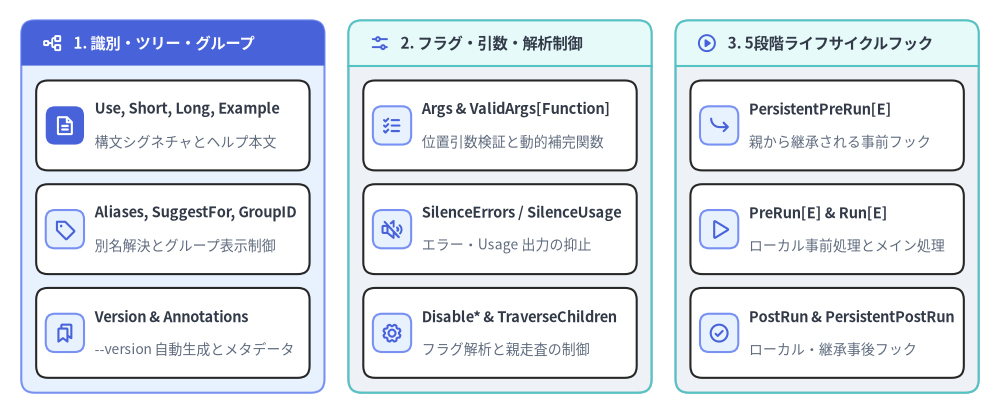
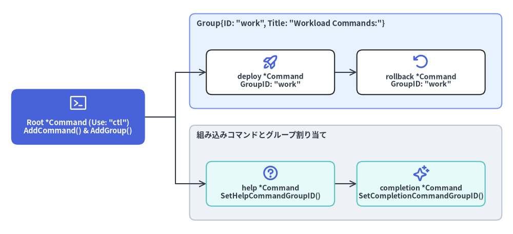

Command 構造体・ツリートポロジ・コマンドグループ
cobra.Command 構造体（command.go）は Cobra の中核となるデータ構造です。ルートバイナリ、中間カテゴリコマンド、末端のアクションコマンド、追加ヘルプトピックのすべてがメモリ上の N 分木における *cobra.Command ノードとして表現されます。

Source Code
from drawlib.canvas import save, setup
from drawlib.icons import phosphor
from drawlib.smartarts import CardList, Panel
from drawlib.styles import Colors, Styles
setup(width=188, height=78)
_ = Colors
col_specs = [
(
4.0,
"1. 識別・ツリー・グループ",
Styles.PrimaryNeutral,
Styles.PrimaryFlat,
Styles.WhiteBold.patch(text_size=11.0),
phosphor.tree_structure,
Styles.WhiteBold,
[
("Use, Short, Long, Example", "構文シグネチャとヘルプ本文", phosphor.file_text, True),
("Aliases, SuggestFor, GroupID", "別名解決とグループ表示制御", phosphor.tag, False),
("Version & Annotations", "--version 自動生成とメタデータ", phosphor.bookmarks, False),
],
),
(
65.5,
"2. フラグ・引数・解析制御",
Styles.Neutral,
Styles.SecondaryNeutral,
Styles.DarkBold.patch(text_size=11.0),
phosphor.sliders_horizontal,
Styles.PrimaryBold,
[
("Args & ValidArgs[Function]", "位置引数検証と動的補完関数", phosphor.list_checks, False),
("SilenceErrors / SilenceUsage", "エラー・Usage 出力の抑止", phosphor.speaker_slash, False),
("Disable* & TraverseChildren", "フラグ解析と親走査の制御", phosphor.gear, False),
],
),
(
127.0,
"3. 5段階ライフサイクルフック",
Styles.Neutral,
Styles.SecondaryNeutral,
Styles.DarkBold.patch(text_size=11.0),
phosphor.play_circle,
Styles.PrimaryBold,
[
("PersistentPreRun[E]", "親から継承される事前フック", phosphor.arrow_bend_down_right, False),
("PreRun[E] & Run[E]", "ローカル事前処理とメイン処理", phosphor.play, False),
("PostRun & PersistentPostRun", "ローカル・継承事後フック", phosphor.check_circle, False),
],
),
]
for x0, title, body_style, hdr_style, hdr_text_style, hdr_icon, hdr_icon_style, items in col_specs:
panel = Panel(
title,
"",
style=body_style,
header_style=hdr_style,
text_style=hdr_text_style,
icon=hdr_icon,
icon_style=hdr_icon_style,
header_variant="filled",
header_height=8.5,
)
panel.draw((x0, 4.0), width=57.0, height=70.0, align="bottom_left")
inner_xy, inner_w, inner_h = panel.get_content_box(
(x0, 4.0),
width=57.0,
height=70.0,
padding=(2.8, 2.8),
align="bottom_left",
)
cards = CardList(
style=Styles.White,
text_style=Styles.DarkBold.patch(text_size=10.5),
description_style=Styles.Muted.patch(text_size=10.0),
badge_shape="rounded_rect",
badge_style=Styles.PrimaryNeutral,
icon_style=Styles.PrimaryBold,
direction="vertical",
spacing=2.6,
)
for mod_name, mod_desc, mod_icon, is_focal in items:
if is_focal:
cards.add(
mod_name,
mod_desc,
icon=mod_icon,
badge_style=Styles.PrimaryFlat,
icon_style=Styles.WhiteBold,
)
else:
cards.add(mod_name, mod_desc, icon=mod_icon)
cards.draw(inner_xy, width=inner_w, height=inner_h, align="bottom_left")
save()
structcobra.Command#
CLI コマンドノードを定義する構造体です（command.go:L54-L260）。通常は構造体リテラル（&cobra.Command{...}）として初期化し、AddCommand() で親子ツリーへ組み込みます。
type Command struct {
// 1. 識別情報・ドキュメント・グループ分類
Use string
Aliases []string
SuggestFor []string
Short string
GroupID string
Long string
Example string
Annotations map[string]string
Version string
// 2. 引数バリデーション・シェル補完設定
ValidArgs []Completion
ValidArgsFunction CompletionFunc
Args PositionalArgs
ArgAliases []string
BashCompletionFunction string
CompletionOptions CompletionOptions
// 3. 実行ライフサイクルフック（実行順: PersistentPreRun -> PreRun -> Run -> PostRun -> PersistentPostRun）
PersistentPreRun func(cmd *Command, args []string)
PersistentPreRunE func(cmd *Command, args []string) error
PreRun func(cmd *Command, args []string)
PreRunE func(cmd *Command, args []string) error
Run func(cmd *Command, args []string)
RunE func(cmd *Command, args []string) error
PostRun func(cmd *Command, args []string)
PostRunE func(cmd *Command, args []string) error
PersistentPostRun func(cmd *Command, args []string)
PersistentPostRunE func(cmd *Command, args []string) error
// 4. フラグ解析・エラー出力・サジェスト制御フラグ
FParseErrWhitelist FParseErrWhitelist
TraverseChildren bool
Hidden bool
Deprecated string
SilenceErrors bool
SilenceUsage bool
DisableFlagParsing bool
DisableAutoGenTag bool
DisableFlagsInUseLine bool
DisableSuggestions bool
SuggestionsMinimumDistance int
}
1. 識別情報・ドキュメント・グループ分類フィールド#
| フィールド名 | 型 | 説明 |
|---|---|---|
Use |
string |
1 行の Usage シグネチャです。最初の空白までの先頭トークンが cmd.Name() になります（例："deploy [flags] <env>" の場合は Name() == "deploy"）。推奨記法では任意引数に [ ]、繰り返しに ...、排他選択に |、必須排他セットに { } を用います。 |
Aliases |
[]string |
Name() の代わりに入力可能な別名スライスです。findNext() によるコマンド解決で照合され、ヘルプの Aliases: 欄に表示されます。 |
SuggestFor |
[]string |
実行可能なエイリアスとしては扱わず、誤入力された際に "Did you mean this?" の候補としてこのコマンドを提案させる文字列リストです（例：delete コマンドに対する "remove", "rm"）。 |
Short |
string |
親コマンドの Available Commands: 一覧およびシェル補完の説明文に表示される 1 行要約です。 |
GroupID |
string |
親コマンドに parent.AddGroup() で登録された cobra.Group の ID です。親に未登録の GroupID を指定すると、ExecuteC() 内の checkCommandGroups() で panic が発生します。 |
Long |
string |
help <command> や <command> --help、および cobra/doc ドキュメント生成時に出力される詳細説明文です。未設定時は Short が使われます。 |
Example |
string |
ヘルプおよび生成ドキュメントの Examples: セクションに出力されるコマンド実行例です。 |
Annotations |
map[string]string |
アプリケーション固有のメタデータを保持するキー・バリューマップです。Annotations[cobra.CommandDisplayNameAnnotation] を設定すると cmd.DisplayName() の表示名を上書きできます。 |
Version |
string |
コマンドのバージョン文字列です。空でない場合、InitDefaultVersionFlag() が --version（および未使用なら -v）フラグを自動追加し、指定時に versionTemplate を出力します。 |
2. フラグ・引数・補完・動作制御フィールド#
| フィールド名 | 型 | 説明 |
|---|---|---|
ValidArgs |
[]Completion |
シェル補完および OnlyValidArgs バリデータで許可される位置引数の静的リストです。CompletionWithDesc() により \t 区切りで説明文を付与できます。ValidArgsFunction とは排他利用です。 |
ValidArgsFunction |
CompletionFunc |
__complete 実行時に位置引数の補完候補を動的に返すコールバック func(cmd *Command, args []string, toComplete string) ([]Completion, ShellCompDirective) です。 |
Args |
PositionalArgs |
位置引数バリデータ関数 func(cmd *Command, args []string) error です（詳細は 04. 位置引数バリデータ 参照）。nil の場合、Find() 時には legacyArgs、ValidateArgs() 時には ArbitraryArgs が適用されます。 |
ArgAliases |
[]string |
ValidArgs の別名リストです。補完候補メニューには表示されませんが、手入力された際に有効な補完対象として受理されます。 |
BashCompletionFunction |
string |
レガシーな Bash 補完 V1（GenBashCompletion）スクリプトに注入するカスタム Bash 関数文字列です。マルチシェル対応には ValidArgsFunction の使用が推奨されます。 |
CompletionOptions |
CompletionOptions |
自動生成される completion サブコマンドの挙動（DisableDefaultCmd, DisableNoDescFlag, DisableDescriptions, HiddenDefaultCmd, DefaultShellCompDirective）を制御します。 |
FParseErrWhitelist |
FParseErrWhitelist |
pflag.ParseErrorsAllowlist（struct{ UnknownFlags bool }）の型エイリアスです。UnknownFlags: true に設定すると、未定義フラグが渡されても ParseFlags() がエラーを返さなくなります。 |
TraverseChildren |
bool |
ルートコマンドで true に設定すると、ExecuteC() が Find() の代わりに Traverse() を呼び出し、経路上のすべての親コマンドでローカルフラグを順次解析してから子コマンドを実行します。 |
Deprecated |
string |
非推奨メッセージです。空でない場合、Available Commands: や補完候補から除外（IsAvailableCommand() == false）され、実行時に "Command <name> is deprecated, <msg>" を出力します。 |
Hidden |
bool |
true に設定すると、ヘルプ一覧・シェル補完・cobra/doc 生成結果から非表示になりますが、明示的にコマンド名を指定すれば実行可能です。 |
SilenceErrors |
bool |
true に設定すると（対象コマンドまたはルートコマンドのいずれか）、execute() がエラーを返した際に ExecuteC() が自動で Error: <err> を標準エラーへ出力するのを抑止します。 |
SilenceUsage |
bool |
true に設定すると、RunE やフラグ・引数検証でエラーが発生した際に ExecuteC() が自動で UsageString() を表示するのを抑止します。 |
DisableFlagParsing |
bool |
true に設定すると、pflag によるフラグ解析を完全にスキップし、-f や --flag を含むすべてのトークンをそのまま args []string として Run / RunE に渡します。 |
DisableAutoGenTag |
bool |
true に設定すると、cobra/doc が生成する Markdown / Man / ReST ファイル末尾の "Auto generated by spf13/cobra..." フッター出力を無効化します。 |
DisableFlagsInUseLine |
bool |
true に設定すると、利用可能なフラグが存在する場合でも UseLine() 末尾への " [flags]" 自動付与を抑止します。 |
DisableSuggestions |
bool |
true に設定すると、未知のサブコマンド入力時にレーベンシュタイン距離に基づく "Did you mean this?" サジェスト表示を無効化します。 |
SuggestionsMinimumDistance |
int |
タイポ候補として提案する最大レーベンシュタイン編集距離です（<= 0 の場合はデフォルト値 2 に設定されます）。 |
3. 実行ライフサイクルフックフィールド（全 10 フィールド）#
全 10 個のフック関数は (cmd *Command, args []string) を受け取ります（args はフラグを除いた位置引数スライス）。フックは cmd.Runnable() == true（Run != nil || RunE != nil）のコマンドでのみ実行されます。同一コマンドに *E（エラー返却あり）と非 E の両方が設定されている場合、常に *E 側が優先されます。
| フックフィールド | シグネチャ | 継承仕様と実行順序 |
|---|---|---|
PersistentPreRunE / PersistentPreRun |
func(cmd *Command, args []string) [error] |
第 1 段階: 子コマンドへ継承されます。デフォルト（EnableTraverseRunHooks == false）では c から親を辿って最初に見つかった 1 つだけを実行します。EnableTraverseRunHooks == true の場合は Root() から c へ向かって定義済みの全フックを順番に実行します。 |
PreRunE / PreRun |
func(cmd *Command, args []string) [error] |
第 2 段階: c 固有の事前フック（子へは継承されません）。PersistentPreRun[E] の直後、かつ ValidateRequiredFlags() および ValidateFlagGroups() の前に実行されます。 |
RunE / Run |
func(cmd *Command, args []string) [error] |
第 3 段階: コマンドのメイン処理です。必須フラグおよびフラググループ検証を通過した後に実行されます。 |
PostRunE / PostRun |
func(cmd *Command, args []string) [error] |
第 4 段階: c 固有の事後フックです。Run / RunE が正常終了した直後に実行されます（エラー時はスキップ）。 |
PersistentPostRunE / PersistentPostRun |
func(cmd *Command, args []string) [error] |
第 5 段階: 子コマンドへ継承される事後フックです。EnableTraverseRunHooks == true の場合は c から Root() へボトムアップ順に実行されます。 |
structcobra.Group & type cobra.FParseErrWhitelist#
command.go 冒頭（L41-L48）で定義されている補助型です。
// FParseErrWhitelist configures Flag parse errors to be ignored
type FParseErrWhitelist flag.ParseErrorsAllowlist
// Group Structure to manage groups for commands
type Group struct {
ID string
Title string
}
| 型 / フィールド | 実体型 | 説明 |
|---|---|---|
FParseErrWhitelist.UnknownFlags |
bool |
true の場合、c.ParseFlags(args) 実行時に未知の --flag が含まれていてもエラーを無視します。Parse() 直前に c.Flags().ParseErrorsAllowlist へコピーされます。 |
Group.ID |
string |
子コマンドの Command.GroupID、SetHelpCommandGroupID()、SetCompletionCommandGroupID() と照合されるグループ識別子です。 |
Group.Title |
string |
UsageString() 出力内で該当グループのサブコマンド一覧の見出しとして表示されるタイトル文字列です。 |

Source Code
from drawlib.canvas import save, setup
from drawlib.diagrams.architecture import ArchitectureDiagram, Node, NodeGroup, PhosphorIcon
from drawlib.styles import Colors, Styles
setup(width=184, height=84)
_ = Colors
d = ArchitectureDiagram(
node_style=Styles.PrimaryBold,
node_text_style=Styles.DarkBold.patch(text_size=10.2),
edge_style=Styles.DarkBold.patch(line_width=1.5),
edge_text_style=Styles.Dark.patch(text_size=10.0),
node_card_style=Styles.White,
)
root_node = d.add(
Node(
"Root *Command (Use: \"ctl\")\nAddCommand() & AddGroup()",
icon=PhosphorIcon.TERMINAL_WINDOW,
icon_size=7.0,
width=48,
height=20,
style=Styles.White,
text_style=Styles.WhiteBold.patch(text_size=10.5),
card_style=Styles.PrimaryFlat.patch(shape_r=2.5),
),
xy=(28.0, 42.0),
)
core_grp = d.add(
NodeGroup(
"Group{ID: \"work\", Title: \"Workload Commands:\"}",
width=112,
height=34,
style=Styles.PrimaryNeutral.patch(shape_r=2.0),
text_style=Styles.DarkBold.patch(text_size=10.8, halign="left", valign="top"),
),
xy=(68.0, 45.0),
)
deploy_node = core_grp.add(
Node(
"deploy *Command\nGroupID: \"work\"",
icon=PhosphorIcon.ROCKET_LAUNCH,
icon_size=6.0,
width=46,
height=16,
card_style=Styles.White.patch(shape_r=2.0),
),
xy=(29.0, 13.0),
)
roll_node = core_grp.add(
Node(
"rollback *Command\nGroupID: \"work\"",
icon=PhosphorIcon.ARROW_COUNTER_CLOCKWISE,
icon_size=6.0,
width=46,
height=16,
card_style=Styles.White.patch(shape_r=2.0),
),
xy=(83.0, 13.0),
)
sys_grp = d.add(
NodeGroup(
"組み込みコマンドとグループ割り当て",
width=112,
height=34,
style=Styles.Neutral.patch(shape_r=2.0),
text_style=Styles.DarkBold.patch(text_size=10.8, halign="left", valign="top"),
),
xy=(68.0, 5.0),
)
help_node = sys_grp.add(
Node(
"help *Command\nSetHelpCommandGroupID()",
icon=PhosphorIcon.QUESTION,
icon_size=6.0,
width=46,
height=16,
card_style=Styles.SecondaryNeutral.patch(shape_r=2.0),
),
xy=(29.0, 13.0),
)
comp_node = sys_grp.add(
Node(
"completion *Command\nSetCompletionCommandGroupID()",
icon=PhosphorIcon.SPARKLE,
icon_size=6.0,
width=46,
height=16,
card_style=Styles.SecondaryNeutral.patch(shape_r=2.0),
),
xy=(83.0, 13.0),
)
d.connect(root_node, deploy_node)
d.connect(root_node, help_node)
d.connect(deploy_node, roll_node)
d.connect(help_node, comp_node)
d.draw((0.0, 0.0))
save()
methodツリー構築・走査メソッド#
コマンドツリーの構築・削除・親方向への走査を行う *Command メソッド群です（command.go）。
func (c *Command) AddCommand(cmds ...*Command)
func (c *Command) RemoveCommand(cmds ...*Command)
func (c *Command) ResetCommands()
func (c *Command) Commands() []*Command
func (c *Command) Parent() *Command
func (c *Command) Root() *Command
func (c *Command) VisitParents(fn func(*Command))
| メソッド | シグネチャ | 説明 |
|---|---|---|
AddCommand |
func (c *Command) AddCommand(cmds ...*Command) |
1 つ以上の子コマンドを c に追加し、child.parent = c の設定、パディング最大長（commandsMaxUseLen 等）の更新、c.globNormFunc の伝播、c.commandsAreSorted = false の設定を行います。cmd == c の場合は "Command can't be a child of itself" で panic します。 |
RemoveCommand |
func (c *Command) RemoveCommand(cmds ...*Command) |
指定された子コマンドを c.commands から切り離し（command.parent = nil）、残りの子コマンドからパディング最大長を再計算します。 |
ResetCommands |
func (c *Command) ResetCommands() |
c.parent、c.commands、c.helpCommand、c.parentsPflags をすべて nil にリセットします（主にテスト用途）。 |
Commands |
func (c *Command) Commands() []*Command |
直下の子コマンドスライスを返します。cobra.EnableCommandSorting == true の場合、未ソート状態であれば Name() の辞書順で遅延ソートを実行します。 |
Parent |
func (c *Command) Parent() *Command |
直近の親 *Command を返します（ルートコマンドの場合は nil）。 |
Root |
func (c *Command) Root() *Command |
c.Parent() を再帰的に辿り、ツリー最上位のルート *Command を返します。 |
VisitParents |
func (c *Command) VisitParents(fn func(*Command)) |
c.Parent() から Root() まで全ての親コマンドに対して順番に fn を呼び出します（c 自身には呼び出されません）。 |
methodツリー状態・利用可否判定メソッド#
ExecuteC()、Usage テンプレート、cobra/doc 生成器がコマンドの種別を判定するための真偽値メソッド群です。
func (c *Command) HasParent() bool
func (c *Command) HasSubCommands() bool
func (c *Command) HasAvailableSubCommands() bool
func (c *Command) HasHelpSubCommands() bool
func (c *Command) IsAvailableCommand() bool
func (c *Command) IsAdditionalHelpTopicCommand() bool
func (c *Command) Runnable() bool
func (c *Command) HasExample() bool
| メソッド | 真となる条件 | 説明 |
|---|---|---|
HasParent() |
c.parent != nil |
親コマンドを持つ子コマンドである場合に true を返します。 |
HasSubCommands() |
len(c.commands) > 0 |
隠し・非推奨を含め、1 つ以上の子コマンドを持つ場合に true を返します。 |
HasAvailableSubCommands() |
いずれかの子が IsAvailableCommand() |
Available Commands: に表示すべき有効な子コマンドが 1 つ以上ある場合に true を返します。 |
HasHelpSubCommands() |
いずれかの子が IsAdditionalHelpTopicCommand() |
Additional help topics: に表示すべき追加ヘルプトピック子コマンドがある場合に true を返します。 |
IsAvailableCommand() |
Deprecated == "" && !Hidden && c != parent.helpCommand && (Runnable() || HasAvailableSubCommands()) |
通常の利用可能コマンドとしてヘルプ一覧やドキュメントに掲載対象かどうかを判定します。 |
IsAdditionalHelpTopicCommand() |
!Runnable() && Deprecated == "" && !Hidden かつ全子コマンドもヘルプトピック |
Run / RunE を持たないドキュメント専用トピックコマンド（例：myapp environment）であるかを判定します。 |
Runnable() |
c.Run != nil || c.RunE != nil |
コマンド自身が実行関数を持つ場合に true を返します。false の親コマンドが単体実行されると flag.ErrHelp を返してヘルプを表示します。 |
HasExample() |
len(c.Example) > 0 |
c.Example が設定されている場合に true を返します。 |
methodコマンド名・パス・エイリアス・パディング取得メソッド#
コマンド名、完全パス、呼び出し時のエイリアス名、およびヘルプ整形用の列幅を取得するメソッド群です。
func (c *Command) Name() string
func (c *Command) DisplayName() string
func (c *Command) CommandPath() string
func (c *Command) UseLine() string
func (c *Command) CalledAs() string
func (c *Command) HasAlias(s string) bool
func (c *Command) NameAndAliases() string
func (c *Command) UsagePadding() int
func (c *Command) CommandPathPadding() int
func (c *Command) NamePadding() int
| メソッド | 戻り値型 | 説明 |
|---|---|---|
Name() |
string |
c.Use の最初のスペース " " より前の先頭トークンを返します。 |
DisplayName() |
string |
c.Annotations[CommandDisplayNameAnnotation] が設定されていればその値を返し、未設定時は c.Name() を返します。 |
CommandPath() |
string |
ルートから c までのスペース区切りの完全コマンドパスを返します（ルートのみ DisplayName() を使用）。 |
UseLine() |
string |
parent.CommandPath() + c.Use（先頭名を DisplayName() に置換）に、利用可能なフラグがあり DisableFlagsInUseLine == false なら " [flags]" を付与した完全 Usage 行を返します。 |
CalledAs() |
string |
Find() / Traverse() 解決時にユーザーが実際に入力したコマンド名またはエイリアス名を返します（未呼び出し時は ""）。 |
HasAlias(s string) |
bool |
s が c.Aliases に含まれるか判定します（cobra.EnableCaseInsensitive の設定に従います）。 |
NameAndAliases() |
string |
c.Name() と全 c.Aliases を ", " で連結した文字列を返します（例："deploy, dep, d"）。 |
NamePadding() |
int |
Available Commands: のコマンド名列パディング幅（max(11, c.parent.commandsMaxNameLen)）を返します。 |
CommandPathPadding() |
int |
Additional help topics: のコマンドパス列パディング幅（max(11, c.parent.commandsMaxCommandPathLen)）を返します。 |
UsagePadding() |
int |
Use 文字列のパディング幅（max(25, c.parent.commandsMaxUseLen)）を返します。 |
methodコマンドグループ管理メソッド#
サブコマンドをヘルプ出力内で論理的なグループ見出しごとに分類するメソッド群です（command.go）。
func (c *Command) AddGroup(groups ...*Group)
func (c *Command) Groups() []*Group
func (c *Command) ContainsGroup(groupID string) bool
func (c *Command) AllChildCommandsHaveGroup() bool
func (c *Command) SetHelpCommandGroupID(groupID string)
func (c *Command) SetCompletionCommandGroupID(groupID string)
| メソッド | シグネチャ | 説明 |
|---|---|---|
AddGroup |
func (c *Command) AddGroup(groups ...*Group) |
1 つ以上の *Group 定義を c.commandgroups に追加します。ヘルプ出力では追加順にグループ見出しが並びます。 |
Groups |
func (c *Command) Groups() []*Group |
c に登録されている *Group スライスを返します。 |
ContainsGroup |
func (c *Command) ContainsGroup(groupID string) bool |
ID == groupID のグループが c.commandgroups に存在するかを返します。ExecuteC() の checkCommandGroups() で検証に使われます。 |
AllChildCommandsHaveGroup |
func (c *Command) AllChildCommandsHaveGroup() bool |
利用可能なすべての子コマンド（および helpCommand）に非空の GroupID が設定されていれば true を返します。false の場合、未分類コマンドは Additional Commands: 見出しの下に表示されます。 |
SetHelpCommandGroupID |
func (c *Command) SetHelpCommandGroupID(groupID string) |
自動生成される help サブコマンドの所属グループ ID を設定します。 |
SetCompletionCommandGroupID |
func (c *Command) SetCompletionCommandGroupID(groupID string) |
c.Root() 上で自動生成される completion サブコマンドの所属グループ ID を設定します。 |
使用例：サブコマンドのグループ分け#
rootCmd := &cobra.Command{Use: "ctl", Short: "Cluster control CLI"}
rootCmd.AddGroup(
&cobra.Group{ID: "workload", Title: "Workload Commands:"},
&cobra.Group{ID: "system", Title: "System & Shell Commands:"},
)
deployCmd := &cobra.Command{
Use: "deploy <service>",
Aliases: []string{"dep"},
Short: "Deploy a service workload",
GroupID: "workload",
RunE: func(cmd *cobra.Command, args []string) error {
cmd.Printf("Deploying %s (called as %s)\n", args[0], cmd.CalledAs())
return nil
},
}
rootCmd.AddCommand(deployCmd)
rootCmd.SetHelpCommandGroupID("system")
rootCmd.SetCompletionCommandGroupID("system")